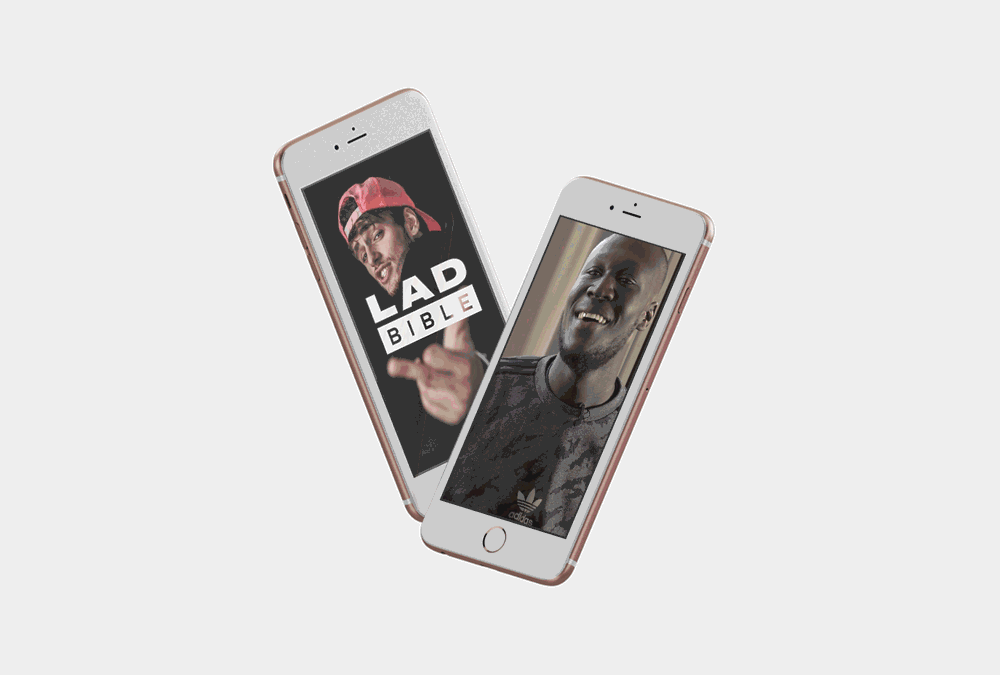

A new brand identity for Lad Bible
Lad Bible started in 2011 and in just 6 years has grown to become one of the widest reaching online media brands in the UK, with over 50 million social followers and regularly attracting around 7 billion monthly engagements across its network. The brand has evolved into an online voice for a generation of fans, and with this massive weight of influence now has its sights set on expanding the LAD empire and pushing the business into new territories.


Design Strategy
We first set about creating a design strategy based on typical audience types and their aspirations, this document would then act as the foundation that would influence and steer our design thinking throughout the project.
The strategy was rooted in lad culture being a positive force - we wanted to create something that was post-hipster, a celebration of design outside of niche.
Logo Design
The logo is born out of the design rationale, designed for purpose and with icon functionality at its core. The height of both word-marks are set to match to give equal prominence to both words.


Typography
We curated typography which offered a wide range of expression, choosing Druk as the primary font due to its versatility, allowing content to communicate sensitively or shout loudly where needed.
Content
Lad Bible are focussing on opening up conversations around social issues such as mental health, climate change and politics through high-end original content and online social movements. We created animated logos and design systems to support this including lock ups for Breaking News and Lad Bible Originals.
Illustration
As part of the brand guide we created an illustration guide to dictate what kind of illustration style works best for the brand and most importantly resonates and speaks with the audience.
Back